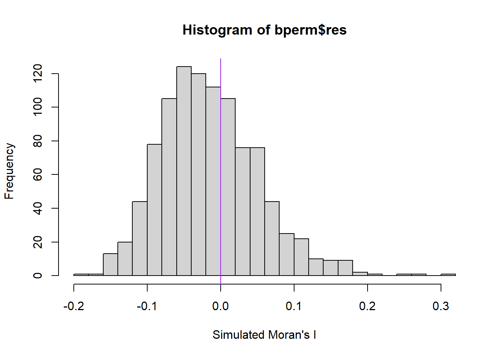
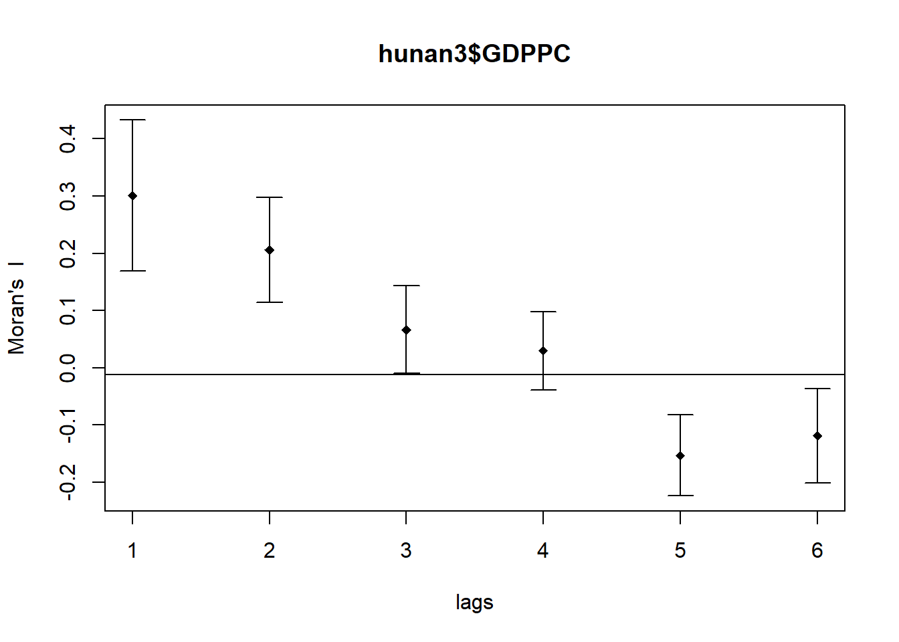
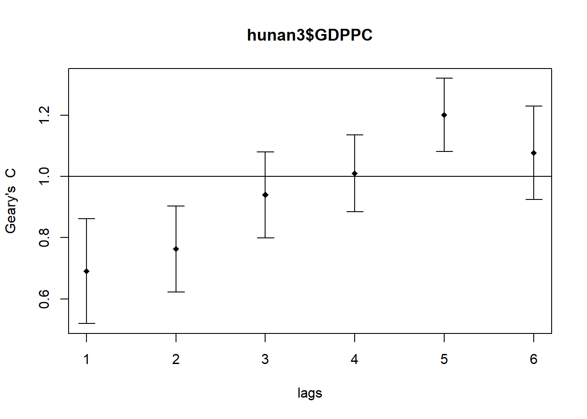

pacman:: p_load(sf, spdep, tidyverse, tmap )6 Global and Local measures of Spatial Association
6.1 Overview
In this Hands-on, I will be exploring how to compute Global Measures of Spatial Autocorrelation (GMSA) using the spdep package.
In spatial policy, one of the main development objective of the local government and planners is to ensure equal distribution of development in the province. Our task in this study, hence, is to apply appropriate spatial statistical methods to discover if development are even distributed geographically. If the answer is No. Then, our next question will be “is there sign of spatial clustering?”. And, if the answer for this question is yes, then our next question will be “where are these clusters?”
In this case study, we are interested to examine the spatial pattern of a selected development indicator (i.e. GDP per capita) of Hunan Provice, People Republic of China.
First and foremost, I will download the necessary packages, mainly sf, tidyverse, spdep and tmap.
6.2 Study Area and Data
For this exercise, I will use 2 data sets:
Hunan province administrative boundary layer at county level. This is a geospatial data set in ESRI shapefile format.
Hunan_2012.csv: This csv file contains selected Hunan’s local development indicators in 2012.
6.2.1 Importing the data
First, I will use the st_read() function of the sf package to import the shapefiles into our R environment.
hunan3 <- st_read(dsn="data/geospatial",
layer="Hunan")Reading layer `Hunan' from data source
`C:\santhyats\IS415-GAA\Hands-on_Ex\Hands-on_Ex06\data\geospatial'
using driver `ESRI Shapefile'
Simple feature collection with 88 features and 7 fields
Geometry type: POLYGON
Dimension: XY
Bounding box: xmin: 108.7831 ymin: 24.6342 xmax: 114.2544 ymax: 30.12812
Geodetic CRS: WGS 84I will also read the csv file into our environment using the read_csv() function.
hunan2012_3<- read_csv("data/aspatial/Hunan_2012.csv")Rows: 88 Columns: 29
── Column specification ────────────────────────────────────────────────────────
Delimiter: ","
chr (2): County, City
dbl (27): avg_wage, deposite, FAI, Gov_Rev, Gov_Exp, GDP, GDPPC, GIO, Loan, ...
ℹ Use `spec()` to retrieve the full column specification for this data.
ℹ Specify the column types or set `show_col_types = FALSE` to quiet this message.Lastly, I will perform a relational join to join the attributes from the hunan2012_3 dataframe to the hunan3 dataframe. This is done by using the left_join() function of the dplyr package.
hunan3 <- left_join(hunan3,hunan2012_3) %>%
select(1:4, 7, 15)Joining with `by = join_by(County)`6.2.2 Visualising Regional Development Indicators
In this section, we will plot a chloropeth map that will show us the distribution of GDPPC 2012. This will be done using the qtm() function of the tmap package.
equal <- tm_shape(hunan3) +
tm_fill("GDPPC",
n = 5,
style = "equal") +
tm_borders(alpha = 0.5) +
tm_layout(main.title = "Equal interval classification")
quantile <- tm_shape(hunan3) +
tm_fill("GDPPC",
n = 5,
style = "quantile") +
tm_borders(alpha = 0.5) +
tm_layout(main.title = "Equal quantile classification")
tmap_arrange(equal,
quantile,
asp=1,
ncol=2)
6.3 Global Measures of Spatial Autocorrelation
6.3.1 Computing Contiguity Spatial Weights
Before we can compute the global spatial autocorrelation, we would first need to derive the spatial weights of the study area. Spatial weights are the neighbourhood relationships between the spatial units.
We will derive the contiguity neighbours list using the poly2nb() function of the spdep package. By default, this function returns a matrice of neighbours of the spatial untis, derived by the Queen’s method.
wm_q3 <- poly2nb(hunan3,
queen=TRUE)
summary(wm_q3)Neighbour list object:
Number of regions: 88
Number of nonzero links: 448
Percentage nonzero weights: 5.785124
Average number of links: 5.090909
Link number distribution:
1 2 3 4 5 6 7 8 9 11
2 2 12 16 24 14 11 4 2 1
2 least connected regions:
30 65 with 1 link
1 most connected region:
85 with 11 linksFrom the summary above, we see that there are a total of 88 spatial regions in hunan and the most connected region has 11 links. There are also 2 least connected regions with only one neighbour each.
6.3.2 Row-standardized Weights Matrix
Next, we need to assign weights to each neighboring polygon. In our case, each neighboring polygon will be assigned equal weight (style=“W”). This is accomplished by assigning the fraction 1/(#ofneighbors) to each neighboring county then summing the weighted income values. While this is the most intuitive way to summaries the neighbors’ values it has one drawback in that polygons along the edges of the study area will base their lagged values on fewer polygons thus potentially over- or under-estimating the true nature of the spatial autocorrelation in the data. For this example, we’ll stick with the style=“W” option for simplicity’s sake but note that other more robust options are available, notably style=“B”.
rswm_q3 <- nb2listw(wm_q3,
style="W",
zero.policy = TRUE)
rswm_q3Characteristics of weights list object:
Neighbour list object:
Number of regions: 88
Number of nonzero links: 448
Percentage nonzero weights: 5.785124
Average number of links: 5.090909
Weights style: W
Weights constants summary:
n nn S0 S1 S2
W 88 7744 88 37.86334 365.91476.4 Global Measures of Spatial Autocorrelation- Moran’s Test
6.4.1 Moran’s I Test
In this section, we will be performing the Maron’s I statistics test using the moran.test() function of the spdep package.
moran.test(hunan3$GDPPC,
listw=rswm_q3,
zero.policy = TRUE,
na.action=na.omit)
Moran I test under randomisation
data: hunan3$GDPPC
weights: rswm_q3
Moran I statistic standard deviate = 4.7351, p-value = 1.095e-06
alternative hypothesis: greater
sample estimates:
Moran I statistic Expectation Variance
0.300749970 -0.011494253 0.004348351 From the statistics derived above, we see that the p-value is extremely small and that the alternate hypothesis is greater, enabling us to reject the null hypothesis (which states that there is no correlation between the weighted spatial units) and conclude that there is significant spatial autocorrelation between the weighted spatial units. This is further corroborated by the positive value of the Moran I Statistic.
In context, this means that counties with similar GDPPC Values are more close to one another spatially as compared to counties that have varying levels.
6.4.2 Computing Monte Carlo Moran’s I Statistic
We will now perform the Monte Carlo Simulation for the Moran’s I Statistic using the moran.mc() function, also from the spdep package.
set.seed(1234)
bperm= moran.mc(hunan3$GDPPC,
listw=rswm_q3,
nsim=999,
zero.policy = TRUE,
na.action=na.omit)
bperm
Monte-Carlo simulation of Moran I
data: hunan3$GDPPC
weights: rswm_q3
number of simulations + 1: 1000
statistic = 0.30075, observed rank = 1000, p-value = 0.001
alternative hypothesis: greaterFrom the statistics above, we once again see that the p-value is lower than 0.05, and we can reject the null hypothesis and accept the claim that the weighted spatial units are positively autocorrelated.
6.4.3 Visualising Monte Carlo Moran’s I
It is always a good practice for us the examine the simulated Moran’s I test statistics in greater detail. This can be achieved by plotting the distribution of the statistical values as a histogram by using the code chunk below.
In the code chunk below hist() and abline() of R Graphics are used.
hist(bperm$res,
freq=TRUE,
breaks=20,
xlab="Simulated Moran's I",)
abline(v=0,
col="purple") 
6.5 Global Measures of Spatial Autocorrelation- Geary’s C
6.5.1 Geary’s C Test
In this section, I will be performing the Geary’s C test using the geary.test() function, also from the spdep package.
geary.test(hunan3$GDPPC, listw=rswm_q3)
Geary C test under randomisation
data: hunan3$GDPPC
weights: rswm_q3
Geary C statistic standard deviate = 3.6108, p-value = 0.0001526
alternative hypothesis: Expectation greater than statistic
sample estimates:
Geary C statistic Expectation Variance
0.6907223 1.0000000 0.0073364 From the statistics above, I see that the Geary C statistic has a postivie value and the p-value is very small. This indicates that the null hypothesis (which states that the weighted spatial units are randomly distributed) is rejected and the weighted spatial units are concluded to be spatially correlated.
6.5.2 Computing Monte Carlo Geary’s C
We will perform the permutations of the Monte Carlo simulation using the geary.mc() function of the spdep package.
set.seed(1234)
bperm=geary.mc(hunan3$GDPPC,
listw=rswm_q3,
nsim=999)
bperm
Monte-Carlo simulation of Geary C
data: hunan3$GDPPC
weights: rswm_q3
number of simulations + 1: 1000
statistic = 0.69072, observed rank = 1, p-value = 0.001
alternative hypothesis: greater6.5.3 Visualising the Monte Carlo Geary’s C
We will once again plot a histogram to reveal the distribution of the values in the Monte Carlo simulation.
hist(bperm$res, freq=TRUE, breaks=20, xlab="Simulated Geary c")
abline(v=1, col="red") 
6.6 Spatial Correlogram
Spatial Correlograms are plots that show how correlated pairs of spatial observations are when you increase the distance (lag) between them - they are plots of some index of autocorrelation (Moran’s I or Geary’s c) against distance. In this section, we will be plotting the coreelograms for the two tests that we have explored so far.
6.6.1 Compute Moran I’s Correlogram
To achieve this, we will be using the sp.correlogram() function of the spdep package.
MI_corr <- sp.correlogram(wm_q3,
hunan3$GDPPC,
order=6,
method="I",
style="W")
plot(MI_corr)
From the plot above, we see that as the distance increases, the distribution of the values of the Moran I’s test becomes more negative, indicating that with larger distances, the spatial autocorrelation of the weighted spatial units decrease.
By plotting the output might not allow us to provide complete interpretation. This is because not all autocorrelation values are statistically significant. Hence, it is important for us to examine the full analysis report by printing out the analysis results as in the code chunk below.
print(MI_corr)Spatial correlogram for hunan3$GDPPC
method: Moran's I
estimate expectation variance standard deviate Pr(I) two sided
1 (88) 0.3007500 -0.0114943 0.0043484 4.7351 2.189e-06 ***
2 (88) 0.2060084 -0.0114943 0.0020962 4.7505 2.029e-06 ***
3 (88) 0.0668273 -0.0114943 0.0014602 2.0496 0.040400 *
4 (88) 0.0299470 -0.0114943 0.0011717 1.2107 0.226015
5 (88) -0.1530471 -0.0114943 0.0012440 -4.0134 5.984e-05 ***
6 (88) -0.1187070 -0.0114943 0.0016791 -2.6164 0.008886 **
---
Signif. codes: 0 '***' 0.001 '**' 0.01 '*' 0.05 '.' 0.1 ' ' 16.6.2 Computing Geary C’s Correlogram
In the code chunk below, sp.correlogram() of spdep package is used to compute a 6-lag spatial correlogram of GDPPC. The global spatial autocorrelation used in Geary’s C. The plot() of base Graph is then used to plot the output.
GC_corr <- sp.correlogram(wm_q3,
hunan3$GDPPC,
order=6,
method="C",
style="W")
plot(GC_corr)
Similarly, we will derive the analysis report
print(GC_corr)Spatial correlogram for hunan3$GDPPC
method: Geary's C
estimate expectation variance standard deviate Pr(I) two sided
1 (88) 0.6907223 1.0000000 0.0073364 -3.6108 0.0003052 ***
2 (88) 0.7630197 1.0000000 0.0049126 -3.3811 0.0007220 ***
3 (88) 0.9397299 1.0000000 0.0049005 -0.8610 0.3892612
4 (88) 1.0098462 1.0000000 0.0039631 0.1564 0.8757128
5 (88) 1.2008204 1.0000000 0.0035568 3.3673 0.0007592 ***
6 (88) 1.0773386 1.0000000 0.0058042 1.0151 0.3100407
---
Signif. codes: 0 '***' 0.001 '**' 0.01 '*' 0.05 '.' 0.1 ' ' 16.7 Local Measures of Spatial Autocorrelation
6.7.1 Computing Local Moran’s I
To compute local Moran’s I, the localmoran() function of spdep will be used. It computes Ii values, given a set of zi values and a listw object providing neighbour weighting information for the polygon associated with the zi values.
The code chunks below are used to compute local Moran’s I of GDPPC2012 at the county level.
fips <- order(hunan3$County)
localMI <- localmoran(hunan3$GDPPC, rswm_q3)
head(localMI) Ii E.Ii Var.Ii Z.Ii Pr(z != E(Ii))
1 -0.001468468 -2.815006e-05 4.723841e-04 -0.06626904 0.9471636
2 0.025878173 -6.061953e-04 1.016664e-02 0.26266425 0.7928094
3 -0.011987646 -5.366648e-03 1.133362e-01 -0.01966705 0.9843090
4 0.001022468 -2.404783e-07 5.105969e-06 0.45259801 0.6508382
5 0.014814881 -6.829362e-05 1.449949e-03 0.39085814 0.6959021
6 -0.038793829 -3.860263e-04 6.475559e-03 -0.47728835 0.6331568localmoran() function returns a matrix of values whose columns are:
Ii: the local Moran’s I statistics
E.Ii: the expectation of local moran statistic under the randomisation hypothesis
Var.Ii: the variance of local moran statistic under the randomisation hypothesis
Z.Ii:the standard deviate of local moran statistic
Pr(): the p-value of local moran statistic
We can make use of the printCoefmat() to list the contents of the local Moran matrix.
printCoefmat(data.frame(
localMI[fips,],
row.names=hunan3$County[fips]),
check.names=FALSE) Ii E.Ii Var.Ii Z.Ii Pr.z....E.Ii..
Anhua -2.2493e-02 -5.0048e-03 5.8235e-02 -7.2467e-02 0.9422
Anren -3.9932e-01 -7.0111e-03 7.0348e-02 -1.4791e+00 0.1391
Anxiang -1.4685e-03 -2.8150e-05 4.7238e-04 -6.6269e-02 0.9472
Baojing 3.4737e-01 -5.0089e-03 8.3636e-02 1.2185e+00 0.2230
Chaling 2.0559e-02 -9.6812e-04 2.7711e-02 1.2932e-01 0.8971
Changning -2.9868e-05 -9.0010e-09 1.5105e-07 -7.6828e-02 0.9388
Changsha 4.9022e+00 -2.1348e-01 2.3194e+00 3.3590e+00 0.0008
Chengbu 7.3725e-01 -1.0534e-02 2.2132e-01 1.5895e+00 0.1119
Chenxi 1.4544e-01 -2.8156e-03 4.7116e-02 6.8299e-01 0.4946
Cili 7.3176e-02 -1.6747e-03 4.7902e-02 3.4200e-01 0.7324
Dao 2.1420e-01 -2.0824e-03 4.4123e-02 1.0297e+00 0.3032
Dongan 1.5210e-01 -6.3485e-04 1.3471e-02 1.3159e+00 0.1882
Dongkou 5.2918e-01 -6.4461e-03 1.0748e-01 1.6338e+00 0.1023
Fenghuang 1.8013e-01 -6.2832e-03 1.3257e-01 5.1198e-01 0.6087
Guidong -5.9160e-01 -1.3086e-02 3.7003e-01 -9.5104e-01 0.3416
Guiyang 1.8240e-01 -3.6908e-03 3.2610e-02 1.0305e+00 0.3028
Guzhang 2.8466e-01 -8.5054e-03 1.4152e-01 7.7931e-01 0.4358
Hanshou 2.5878e-02 -6.0620e-04 1.0167e-02 2.6266e-01 0.7928
Hengdong 9.9964e-03 -4.9063e-04 6.7742e-03 1.2742e-01 0.8986
Hengnan 2.8064e-02 -3.2160e-04 3.7597e-03 4.6294e-01 0.6434
Hengshan -5.8201e-03 -3.0437e-05 5.1076e-04 -2.5618e-01 0.7978
Hengyang 6.2997e-02 -1.3046e-03 2.1865e-02 4.3486e-01 0.6637
Hongjiang 1.8790e-01 -2.3019e-03 3.1725e-02 1.0678e+00 0.2856
Huarong -1.5389e-02 -1.8667e-03 8.1030e-02 -4.7503e-02 0.9621
Huayuan 8.3772e-02 -8.5569e-04 2.4495e-02 5.4072e-01 0.5887
Huitong 2.5997e-01 -5.2447e-03 1.1077e-01 7.9685e-01 0.4255
Jiahe -1.2431e-01 -3.0550e-03 5.1111e-02 -5.3633e-01 0.5917
Jianghua 2.8651e-01 -3.8280e-03 8.0968e-02 1.0204e+00 0.3076
Jiangyong 2.4337e-01 -2.7082e-03 1.1746e-01 7.1800e-01 0.4728
Jingzhou 1.8270e-01 -8.5106e-04 2.4363e-02 1.1759e+00 0.2396
Jinshi -1.1988e-02 -5.3666e-03 1.1334e-01 -1.9667e-02 0.9843
Jishou -2.8680e-01 -2.6305e-03 4.4028e-02 -1.3543e+00 0.1756
Lanshan 6.3334e-02 -9.6365e-04 2.0441e-02 4.4972e-01 0.6529
Leiyang 1.1581e-02 -1.4948e-04 2.5082e-03 2.3422e-01 0.8148
Lengshuijiang -1.7903e+00 -8.2129e-02 2.1598e+00 -1.1623e+00 0.2451
Li 1.0225e-03 -2.4048e-07 5.1060e-06 4.5260e-01 0.6508
Lianyuan -1.4672e-01 -1.8983e-03 1.9145e-02 -1.0467e+00 0.2952
Liling 1.3774e+00 -1.5097e-02 4.2601e-01 2.1335e+00 0.0329
Linli 1.4815e-02 -6.8294e-05 1.4499e-03 3.9086e-01 0.6959
Linwu -2.4621e-03 -9.0703e-06 1.9258e-04 -1.7676e-01 0.8597
Linxiang 6.5904e-02 -2.9028e-03 2.5470e-01 1.3634e-01 0.8916
Liuyang 3.3688e+00 -7.7502e-02 1.5180e+00 2.7972e+00 0.0052
Longhui 8.0801e-01 -1.1377e-02 1.5538e-01 2.0787e+00 0.0376
Longshan 7.5663e-01 -1.1100e-02 3.1449e-01 1.3690e+00 0.1710
Luxi 1.8177e-01 -2.4855e-03 3.4249e-02 9.9561e-01 0.3194
Mayang 2.1852e-01 -5.8773e-03 9.8049e-02 7.1663e-01 0.4736
Miluo 1.8704e+00 -1.6927e-02 2.7925e-01 3.5715e+00 0.0004
Nan -9.5789e-03 -4.9497e-04 6.8341e-03 -1.0988e-01 0.9125
Ningxiang 1.5607e+00 -7.3878e-02 8.0012e-01 1.8274e+00 0.0676
Ningyuan 2.0910e-01 -7.0884e-03 8.2306e-02 7.5356e-01 0.4511
Pingjiang -9.8964e-01 -2.6457e-03 5.6027e-02 -4.1698e+00 0.0000
Qidong 1.1806e-01 -2.1207e-03 2.4747e-02 7.6396e-01 0.4449
Qiyang 6.1966e-02 -7.3374e-04 8.5743e-03 6.7712e-01 0.4983
Rucheng -3.6992e-01 -8.8999e-03 2.5272e-01 -7.1814e-01 0.4727
Sangzhi 2.5053e-01 -4.9470e-03 6.8000e-02 9.7972e-01 0.3272
Shaodong -3.2659e-02 -3.6592e-05 5.0546e-04 -1.4510e+00 0.1468
Shaoshan 2.1223e+00 -5.0227e-02 1.3668e+00 1.8583e+00 0.0631
Shaoyang 5.9499e-01 -1.1253e-02 1.3012e-01 1.6807e+00 0.0928
Shimen -3.8794e-02 -3.8603e-04 6.4756e-03 -4.7729e-01 0.6332
Shuangfeng 9.2835e-03 -2.2867e-03 3.1516e-02 6.5174e-02 0.9480
Shuangpai 8.0591e-02 -3.1366e-04 8.9838e-03 8.5358e-01 0.3933
Suining 3.7585e-01 -3.5933e-03 4.1870e-02 1.8544e+00 0.0637
Taojiang -2.5394e-01 -1.2395e-03 1.4477e-02 -2.1002e+00 0.0357
Taoyuan 1.4729e-02 -1.2039e-04 8.5103e-04 5.0903e-01 0.6107
Tongdao 4.6482e-01 -6.9870e-03 1.9879e-01 1.0582e+00 0.2900
Wangcheng 4.4220e+00 -1.1067e-01 1.3596e+00 3.8873e+00 0.0001
Wugang 7.1003e-01 -7.8144e-03 1.0710e-01 2.1935e+00 0.0283
Xiangtan 2.4530e-01 -3.6457e-04 3.2319e-03 4.3213e+00 0.0000
Xiangxiang 2.6271e-01 -1.2703e-03 2.1290e-02 1.8092e+00 0.0704
Xiangyin 5.4525e-01 -4.7442e-03 7.9236e-02 1.9539e+00 0.0507
Xinhua 1.1810e-01 -6.2649e-03 8.6001e-02 4.2409e-01 0.6715
Xinhuang 1.5725e-01 -4.1820e-03 3.6648e-01 2.6667e-01 0.7897
Xinning 6.8928e-01 -9.6674e-03 2.0328e-01 1.5502e+00 0.1211
Xinshao 5.7578e-02 -8.5932e-03 1.1769e-01 1.9289e-01 0.8470
Xintian -7.4050e-03 -5.1493e-03 1.0877e-01 -6.8395e-03 0.9945
Xupu 3.2406e-01 -5.7468e-03 5.7735e-02 1.3726e+00 0.1699
Yanling -6.9021e-02 -5.9211e-04 9.9306e-03 -6.8667e-01 0.4923
Yizhang -2.6844e-01 -2.2463e-03 4.7588e-02 -1.2202e+00 0.2224
Yongshun 6.3064e-01 -1.1350e-02 1.8830e-01 1.4795e+00 0.1390
Yongxing 4.3411e-01 -9.0735e-03 1.5088e-01 1.1409e+00 0.2539
You 7.8750e-02 -7.2728e-03 1.2116e-01 2.4714e-01 0.8048
Yuanjiang 2.0004e-04 -1.7760e-04 2.9798e-03 6.9181e-03 0.9945
Yuanling 8.7298e-03 -2.2981e-06 2.3221e-05 1.8121e+00 0.0700
Yueyang 4.1189e-02 -1.9768e-04 2.3113e-03 8.6085e-01 0.3893
Zhijiang 1.0476e-01 -7.8123e-04 1.3100e-02 9.2214e-01 0.3565
Zhongfang -2.2685e-01 -2.1455e-03 3.5927e-02 -1.1855e+00 0.2358
Zhuzhou 3.2864e-01 -5.2432e-04 7.2391e-03 3.8688e+00 0.0001
Zixing -7.6849e-01 -8.8210e-02 9.4057e-01 -7.0144e-01 0.4830